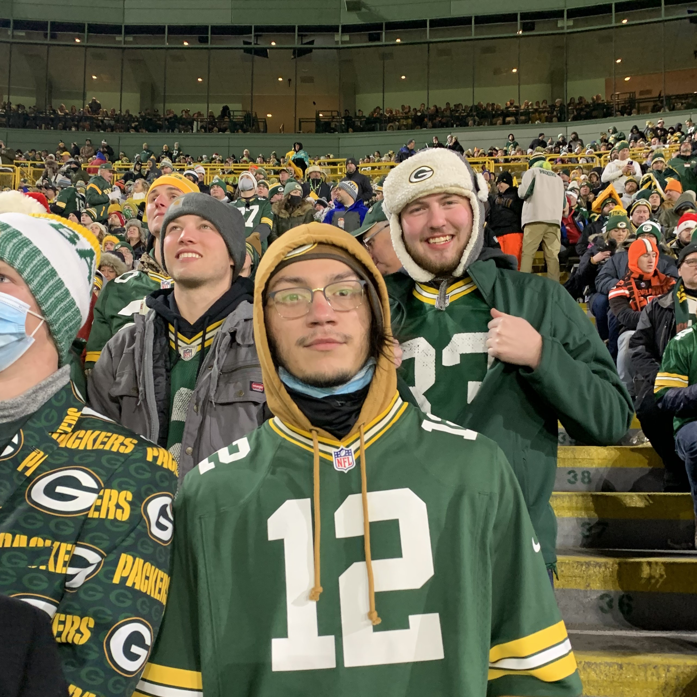

Jose Andres Montes
Texas A&M University - Kingsville Alumni
Computer Scientist
My name is Jose Montes. I am a Texas A&M University - Kingsville graduate with a bachelor's in computer science, as well as a minor in mathematics. This is my personal website that I use to tell others about myself, as well as showcase my skills and projects as an aspiring web-developer.